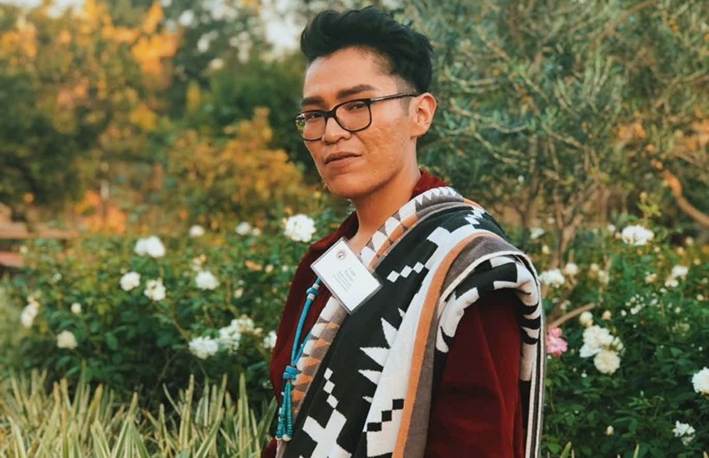

Tomás Karmelo Amaya joins Indian Country Today as the creative director. He is Yoeme, A:shiwi and Rarámuri.

A spec is a “made-up” commercial that filmmakers use to showcase their talent and potential. That is exactly what Diné filmmaker Christopher Nataanii Cegielski did when he created his New Balance spec called “For Any Run.”

Tomorrow Montana Governor Steve Bullock will sit down for a one-on-one interview at the Indian Country Today headquarters located at The Walter Cronkite School of Journalism and Mass Communication at Arizona State University.
John Dossett, former general counsel to the National Congress of American Indians, is suing High Country News, Indianz.com and Indian Country Today for defamation in a $ 6-million lawsuit filed in the District of Oregon.

Lane Yazzie, Diné, is a fifth-year student at San Diego State University concentrating on interdisciplinary studies. Yazzie found the transition from high school to college as difficult.
Presidential candidate Cory Booker says Indian Country is a critical part of his $3 trillion climate and economic justice plan.